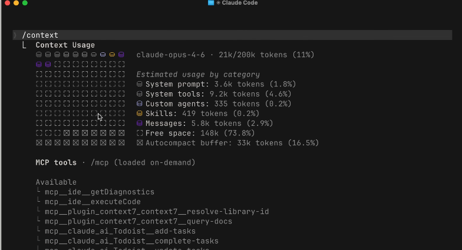

sequenceDiagram
participant U as User
participant L as LLM
U->>L: what's written in main.go?
L-->>U: テキストの入出力しか扱えず<br/>外部システムと直接やり取りすることはできない<br>=ファイル参照手段を持たない
claude-code 101
2026年04月13日
コーディングエージェント概論
標準ワークフローと活用
プロンプトエンジニアリング基礎
Context Management
コーディングエージェントの進化2
pipeline:
title: "LLM登場前"
content:
- 'バッチ処理やワークフローによる処理自動化'
- '処理は自動化されるがロジックは固定'
opposite: "2010年代後半"
color: "#B4D7FF"
copilot:
title: "LLMコーディング支援"
content:
- 'コード補完・生成（Copilot, ChatGPTなど）'
- 'コード補完や関数の生成'
- '試行錯誤は人間が実施'
opposite: "2020年代前半"
color: "#0E3666"
agent_v1:
title: "対話型エージェント"
content:
- 'IDE + AIモデル(Cursorが代表例)'
- 'レポジトリ内容を踏まえて，コード生成と実行を自動化'
- 対話的な開発フロー中心
opposite: "2023〜2024"
color: "#0E3666"
agent_v2:
title: "自律型エージェント"
content:
- 'Devin, Claude Code'
- '計画→実行→検証→修正のループを確立'
- 'バックグラウンド実行，非同期・並列実行'
opposite: "2024〜"
color: "#428CE6"「計画 → 実行 → 検証 → 修正」の自律ループ1で動く
指示・ゴール
計画立案
実行
検証
修正・再計画
コーディングエージェントの中核機能
ファイル読込など環境作用が必要な質問は、LLM単体では完結せずアシスタント層が必須
Bare LLM：ファイルにアクセスできない
sequenceDiagram
participant U as User
participant L as LLM
U->>L: what's written in main.go?
L-->>U: テキストの入出力しか扱えず<br/>外部システムと直接やり取りすることはできない<br>=ファイル参照手段を持たない
ReadFile)を付加Coding Assistant：ツール経由でファイルを読む
sequenceDiagram
participant U as User
participant CA as Coding Assistant
participant L as LLM
U->>CA: what's written in main.go?
CA->>L: what's written in main.go?<br/>If you want to read a file,<br/>respond with "ReadFile: name"
L-->>CA: ReadFile: main.go
Note over CA: read main.go
CA->>L: <Contents of main.go>
L-->>CA: ファイル内容に基づく回答
CA-->>U: 回答を表示
コーディングエージェント概論
標準ワークフローと活用
プロンプトエンジニアリング基礎
Context Management
いきなり実装ではなく，Plan Modeで設計を固めてから実装・レビューに進める4段の標準フロー
record1:
category: Explore
rule:
- 関連ファイル・依存関係を<span class="regmonkey-bold">読み取り専用</span>で網羅させる
actions:
- 「実装場所・依存追加要否・アプローチ」をまとめて指示
- 計画前提でなくてもexploreサブエージェント単体で起動可
record2:
category: Plan
rule:
- <span class="regmonkey-bold">コードを書く前</span>に方針をレビュー・修正する
- <code>Shift</code> + <code>Enter</code>でPlanモードに切り替え
actions:
- 提案された計画を読み，妥当性を確認
- 不足箇所は「ここを直して」と指摘して再提案させる
- approve / 個別修正 / 質問 を選んで進行を制御
record3:
category: Code
rule:
- <span class="regmonkey-bold">「正しい」の定義</span>を渡し，検証可能な状態を保つ
actions:
- 成功条件を明示：何をもって完了とするか定義
- 信頼できるテストスイートを継続検証の拠り所に
record4:
category: Commit
rule:
- <span class="regmonkey-bold">第三者視点</span>で差分を確認してからpushする
actions:
- <code>code-reviewer</code> サブエージェントに新コンテキストでレビュー
- スタイルを指定してClaudeにcommit messageを生成仕様書駆動（Spec-Driven）でエージェントのコンテキストを整える
CLAUD.mdで制御)コーディングエージェント概論
標準ワークフローと活用
プロンプトエンジニアリング基礎
Context Management
人間への指示と同じ原則にAI固有の留意点を組み合わせる
AI Fluency 4D Framework における位置づけ1
文脈・例示・制約は共通．役割設定・思考時間はAI固有の考慮
人間への依頼と共通する原則
AI固有の考慮事項
Think step-by-step)文脈・例示・制約・分解・思考・役割を組み合わせて使う
record1:
category: Give context
rule:
- 何を・なぜ・どんな背景でかを<span class="regmonkey-bold">冒頭で明示</span>する
actions:
- 目的・前提・対象データ・成功条件を最初に書く
- 関連ファイル・既知の制約・想定読者を添える
record2:
category: Show examples
rule:
- 望ましい出力の<span class="regmonkey-bold">形を具体例で見せる</span>
actions:
- Few-shot examples（入出力ペアを2〜3組）
- 完成サンプル・参考フォーマットを添付
record3:
category: Specify constraints
rule:
- フォーマット・長さ・口調を<span class="regmonkey-bold">数値や形式で固定</span>する
actions:
- JSON形式・箇条書き・xx語以内など出力形式を指定
- 含めるもの・含めないものを明記
record4:
category: Break complex tasks into steps
rule:
- 複雑な依頼を<span class="regmonkey-bold">段階的なサブタスクに分ける</span>
actions:
- Step 1・Step 2 ... と順序を明示
- 中間成果物の確認ポイントを置く
record5:
category: Ask the AI to think first
rule:
- 結論前に<span class="regmonkey-bold">推論プロセスを書かせる</span>余地を与える
actions:
- 「Think step-by-step」「まず計画を立ててから」と指示
- チェーン・オブ・ソートで途中経過を出させる
record6:
category: Define the AI's role
rule:
- AIの<span class="regmonkey-bold">立場・専門性・トーン</span>を定義する
actions:
- 「あなたは〜の専門家として回答してください」
- 想定読者に合わせた説明の粒度を指定コーディングエージェント概論
標準ワークフローと活用
プロンプトエンジニアリング基礎
Context Management
エージェントの「作業メモリ」として，あらゆる入出力が同じ有限リソースを共有する

Context Windowを消費する代表的な要素
Read / Bash / Grep などツール実行結果会話は途切れず継続できるが，要約により細部の情報が落ちるリスクがある
Compactionの仕組み
Compacting conversation... と表示され，要約結果が直後に展開される詳細喪失のリスク
CLAUDE.md やファイルへ書き出すべき/compact か /clear を能動的に呼ぶ方が安全/context で現状把握 → 状況に応じて /compact か /clear を使い分ける
record1:
category: /context
rule:
- 現在のコンテキスト使用量を<span class="regmonkey-bold">カテゴリ別に可視化</span>する
actions:
- System prompt / Tools / Messages / Free space の内訳をバーで確認
- どのカテゴリが圧迫しているかを特定し，対策の起点にする
record2:
category: /compact
rule:
- その時点までの会話を<span class="regmonkey-bold">手動で要約・圧縮</span>する
actions:
- 同一feature内で作業を続けたい時に空き容量を確保
- 自動Compactionより制御性が高く，区切りを意図的に置ける
record3:
category: /clear
rule:
- 会話を<span class="regmonkey-bold">完全にリセット</span>し，記憶を持ち越さない
actions:
- 別タスクへ切り替える時に前文脈のバイアスを断つ
- 永続化したい知識は <code>CLAUDE.md</code> に書き出してから実行作業が続くか切り替わるかでコマンドを選び，永続記憶は CLAUDE.md に逃がす
同じfeatureを継続したい
/compact を使う：直近の作業文脈を要約として残す別タスク・別featureへ切り替える
/clear を使う：過去の文脈を一切持ち越さないCLAUDE.md に書く
曖昧な指示・不要なMCP・本体での雑用がコンテキストを最も食う
具体的に書く
MCPサーバーを管理
サブエージェントに委譲
Claudeの返答が期待と外れた時に，原因と対処を症状別に切り分ける早見表
record1:
category: 返答が<br>抽象的すぎる
rule:
- プロンプトに<span class="regmonkey-bold">具体的状況の文脈</span>が不足している
actions:
- 対象読者・役割・制約条件などの詳細を追加する
- 例：「遅延メールを書いて」→「ソフト統合が2週間遅れる旨を伝える，2回目の遅延，謝意を含むプロフェッショナルなトーン」と具体化
record2:
category: 返答が<br>長すぎる/短すぎる
rule:
- Claudeが<span class="regmonkey-bold">適切な長さを推測</span>するしかない状態
actions:
- 「2段落で要約して」「100語以内」など長さを具体的に明示する
- 詳細解析が必要なら「長さは気にせず包括的に」と逆方向にも指定
record3:
category: 指定フォーマットに<br>従わない
rule:
- 「何を」は理解したが「<span class="regmonkey-bold">どう提示するか</span>」が伝わっていない
actions:
- フォーマット例を直接見せるか，構造を明示する
- 例：「各セクションに太字見出しを付けた箇条書きで書いて」
record4:
category: 自信ありげに<br>誤情報を出す
rule:
- 専門領域や具体事実で<span class="regmonkey-bold">もっともらしい誤答</span>を生成しうる
actions:
- 重要用途では重要事実を独立に検証する
- <code>出典提示</code>や<code>確信度表示</code>を要求する
- Web検索を有効化して最新情報に基づかせる
record5:
category: トーンが<br>合わない
rule:
- デフォルトの<span class="regmonkey-bold">親切でプロフェッショナル</span>な口調が目的と合わない
actions:
- 「もっと会話的に」「権威的でフォーマルに」と自然言語でトーンを説明
- 望む文体の例を与えるDelegation・Description・Discernment・Diligence の4つでAI協働の能力を分解する
regmonkey_abstract_summary:
title_fontsize: 1.3em
bullet_fontsize: 0.95em
children:
- title: Delegation
description:
- 何を人，何をAI，どう分担するかを<strong>戦略的に決める</strong>
- 自分のゴール・AIの能力・タスクの性質を踏まえて配分
- 例：下書き・要約はAI，最終レビューと意思決定は人で切り分ける
width: [25, 75]
- title: Description
description:
- AIシステムと<strong>効果的に意思疎通</strong>する技能
- 出力の定義・プロセスの誘導・望ましい挙動の指定
- 例：制約条件・フォーマット・トーンを明示して精度を高める
width: [25, 75]
- title: Discernment
description:
- AIの出力・プロセス・挙動を<strong>批判的に評価</strong>する
- 品質・正確性・適切性を見極め，改善点を特定
- 例：ハルシネーションや論理破綻を検知して修正する
width: [25, 75]
- title: Diligence
description:
- AIを<strong>責任を持って倫理的に使う</strong>
- 透明性・説明責任・人による最終確認を維持
- 例：機密情報・著作権・バイアスへの配慮を行う
width: [25, 75]WHATの明確化
HOWの明確化
# DESIGN.md
## アーキテクチャ
単一HTML + Vanilla JS + d3.js
## コンポーネント構成
┌────────────────────┐
│ DropZone │ CSV受け取り
├────────────────────┤
│ AxisSelector │ 列選択UI
├────────────────────┤
│ ChartRenderer│ d3で描画
├────────────────────┤
│ ExportButton │ PNG/SVG出力
└────────────────────┘
## データフロー
CSV → Papa.parse → rawData[]
→ { xCol, yCol, chartType }
→ d3.select('#chart') → SVGTODOの明確化
Regmonkey Presentation. ©Ryo Nakagami. All rights reserved.